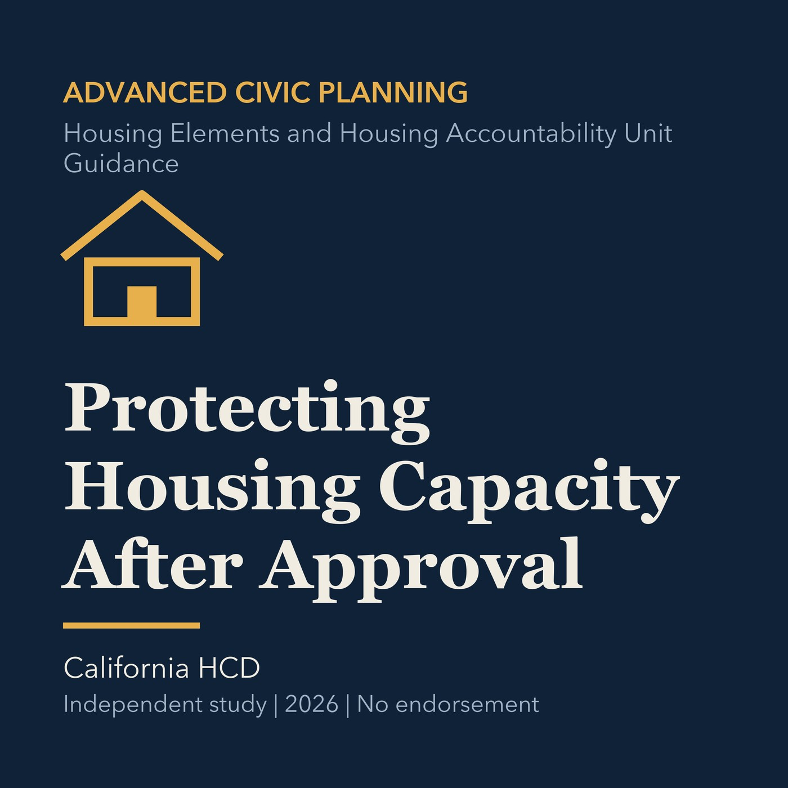

EPISODE 23
Protecting Housing Capacity After Approval
Explains how implementation, replacement capacity, monitoring, and enforcement protect planned housing.

- Stable GUID
10dd308a-016b-536e-99ef-d0ad42b045e4- Release
- advanced-civic-planning-v2026.3
- SHA-256
d7e02ff7db068f5421e4a7e3dca5476ec1950ceb81c915a796b8a95626d080fb